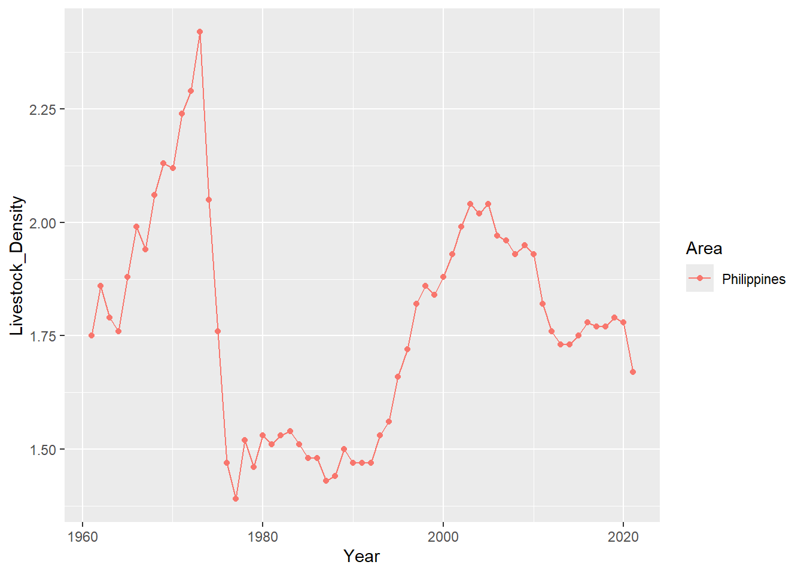

library(tidyverse)
library(data.table)
library(countrycode)
library(FSA)
library(forecast)
livestock_data = fread("Livestock_data.csv") %>% as_tibble()Livestock Pattern Analysis
Overview
We are going to analyze the Livestock data downloaded from Food and Agriculture Organization of the United Nations website. Below are the questions we are going to answer by using our data.
- What Items or Livestock has the highest density for the most recent year by:
- Overall (World wide)
- Region
- What is the trend of total Livestock density for:
- Overall
- Region
- Identify if there is a significant difference in Livestock Density for each Region.
- Determine the Top 10 country with the Highest Livestock Density.
- Create a Time Series Model for:
- The top 3 Livestock Product of the Top 1 Country by Livestock Density for each Region
Data Import and Pre-Process
#Check Dimension of Data
glimpse(livestock_data)Rows: 8,180
Columns: 70
$ `Area Code` <int> 2, 2, 2, 2, 2, 2, 2, 2, 2, 2, 2, 2, 2, 2, 2, 2, 2, 2…
$ `Area Code (M49)` <chr> "'004", "'004", "'004", "'004", "'004", "'004", "'00…
$ Area <chr> "Afghanistan", "Afghanistan", "Afghanistan", "Afghan…
$ `Item Code` <int> 1107, 1107, 1107, 1126, 1126, 1126, 866, 866, 866, 1…
$ `Item Code (CPC)` <chr> "'02132", "'02132", "'02132", "'02121.01", "'02121.0…
$ Item <chr> "Asses", "Asses", "Asses", "Camels", "Camels", "Came…
$ `Element Code` <int> 7213, 7211, 5118, 7213, 7211, 5118, 7213, 7211, 5118…
$ Element <chr> "Livestock units per agricultural land area", "Share…
$ Unit <chr> "LSU/ha", "%LSU", "LSU", "LSU/ha", "%LSU", "LSU", "L…
$ Y1961 <dbl> 0.02, 12.36, 650000.00, 0.00, 3.57, 187500.00, 0.05,…
$ Y1962 <dbl> 0.01, 8.10, 425925.00, 0.01, 3.99, 209932.50, 0.06, …
$ Y1963 <dbl> 0.01, 9.15, 500556.00, 0.01, 4.79, 262053.75, 0.06, …
$ Y1964 <dbl> 0.02, 10.27, 575000.00, 0.01, 4.35, 243750.00, 0.06,…
$ Y1965 <dbl> 2.000e-02, 1.134e+01, 6.500e+05, 1.000e-02, 3.920e+0…
$ Y1966 <dbl> 2.000e-02, 1.016e+01, 6.000e+05, 1.000e-02, 3.810e+0…
$ Y1967 <dbl> 2.000e-02, 1.014e+01, 6.000e+05, 1.000e-02, 3.800e+0…
$ Y1968 <dbl> 0.02, 10.84, 664000.00, 0.01, 3.66, 224250.00, 0.07,…
$ Y1969 <dbl> 2.000e-02, 1.033e+01, 6.250e+05, 1.000e-02, 3.720e+0…
$ Y1970 <dbl> 2.000e-02, 1.051e+01, 6.500e+05, 1.000e-02, 3.640e+0…
$ Y1971 <dbl> 2.000e-02, 1.057e+01, 6.500e+05, 1.000e-02, 3.660e+0…
$ Y1972 <dbl> 2.000e-02, 1.309e+01, 6.500e+05, 1.000e-02, 4.530e+0…
$ Y1973 <dbl> 0.02, 12.06, 625000.00, 0.01, 4.34, 225000.00, 0.06,…
$ Y1974 <dbl> 0.02, 11.26, 625000.00, 0.01, 4.05, 225000.00, 0.06,…
$ Y1975 <dbl> 0.02, 10.48, 625000.00, 0.01, 3.77, 225000.00, 0.07,…
$ Y1976 <dbl> 2.000e-02, 1.027e+01, 6.250e+05, 1.000e-02, 3.700e+0…
$ Y1977 <dbl> 0.02, 10.84, 650000.00, 0.01, 3.75, 225000.00, 0.07,…
$ Y1978 <dbl> 0.02, 10.95, 650000.00, 0.01, 3.79, 225000.00, 0.07,…
$ Y1979 <dbl> 2.000e-02, 1.117e+01, 6.500e+05, 1.000e-02, 3.480e+0…
$ Y1980 <dbl> 0.02, 11.08, 647500.00, 0.01, 3.40, 198750.00, 0.07,…
$ Y1981 <dbl> 0.02, 11.13, 657500.00, 0.01, 3.36, 198750.00, 0.07,…
$ Y1982 <dbl> 0.02, 11.14, 657500.00, 0.01, 3.37, 198750.00, 0.07,…
$ Y1983 <dbl> 0.02, 11.93, 657500.00, 0.01, 3.60, 198750.00, 0.06,…
$ Y1984 <dbl> 0.02, 13.91, 659000.00, 0.01, 4.20, 198750.00, 0.05,…
$ Y1985 <dbl> 0.02, 15.60, 660500.00, 0.01, 4.69, 198750.00, 0.04,…
$ Y1986 <dbl> 0.02, 19.31, 662500.00, 0.01, 5.79, 198750.00, 0.03,…
$ Y1987 <dbl> 2.000e-02, 1.777e+01, 6.500e+05, 1.000e-02, 6.150e+0…
$ Y1988 <dbl> 0.01, 13.37, 500000.00, 0.01, 5.32, 198750.00, 0.03,…
$ Y1989 <dbl> 0.01, 10.98, 400000.00, 0.00, 4.84, 176250.00, 0.03,…
$ Y1990 <dbl> 0.01, 8.43, 300000.00, 0.00, 4.53, 161250.00, 0.03, …
$ Y1991 <dbl> 1.000e-02, 7.080e+00, 2.500e+05, 0.000e+00, 4.250e+0…
$ Y1992 <dbl> 1.000e-02, 7.060e+00, 2.500e+05, 0.000e+00, 4.230e+0…
$ Y1993 <dbl> 1.000e-02, 7.030e+00, 2.500e+05, 0.000e+00, 4.220e+0…
$ Y1994 <dbl> 1.000e-02, 8.170e+00, 3.000e+05, 0.000e+00, 4.090e+0…
$ Y1995 <dbl> 0.01, 9.06, 352000.00, 0.00, 3.88, 150750.00, 0.04, …
$ Y1996 <dbl> 0.01, 8.59, 376500.00, 0.00, 3.78, 165750.00, 0.05, …
$ Y1997 <dbl> 0.01, 8.37, 402500.00, 0.00, 3.77, 181500.00, 0.05, …
$ Y1998 <dbl> 0.01, 8.34, 430000.00, 0.01, 3.86, 198750.00, 0.06, …
$ Y1999 <dbl> 0.01, 8.00, 459970.00, 0.01, 3.79, 217788.00, 0.06, …
$ Y2000 <dbl> 1.000e-02, 6.930e+00, 3.410e+05, 0.000e+00, 3.410e+0…
$ Y2001 <dbl> 0.01, 8.26, 341000.00, 0.00, 4.07, 168000.00, 0.04, …
$ Y2002 <dbl> 0.02, 14.91, 794000.00, 0.00, 2.47, 131250.00, 0.07,…
$ Y2003 <dbl> 0.02, 14.63, 799000.00, 0.00, 2.49, 135750.00, 0.07,…
$ Y2004 <dbl> 0.02, 14.99, 807000.00, 0.00, 2.65, 142500.00, 0.06,…
$ Y2005 <dbl> 0.02, 12.79, 695500.00, 0.00, 2.59, 141000.00, 0.07,…
$ Y2006 <dbl> 2.000e-02, 1.126e+01, 6.075e+05, 0.000e+00, 2.420e+0…
$ Y2007 <dbl> 0.02, 13.54, 736000.00, 0.00, 2.57, 139500.00, 0.08,…
$ Y2008 <dbl> 0.02, 10.14, 604500.00, 0.00, 2.30, 137250.00, 0.09,…
$ Y2009 <dbl> 0.02, 10.83, 661000.00, 0.00, 2.33, 142500.00, 0.09,…
$ Y2010 <dbl> 0.02, 9.97, 702500.00, 0.00, 2.03, 143250.00, 0.10, …
$ Y2011 <dbl> 0.02, 10.27, 733000.00, 0.00, 1.81, 129000.00, 0.10,…
$ Y2012 <dbl> 0.02, 10.40, 711500.00, 0.00, 1.91, 130500.00, 0.10,…
$ Y2013 <dbl> 0.02, 10.77, 725500.00, 0.00, 1.89, 127500.00, 0.10,…
$ Y2014 <dbl> 0.02, 10.53, 720500.00, 0.00, 1.87, 128250.00, 0.10,…
$ Y2015 <dbl> 0.02, 10.81, 740500.00, 0.00, 1.86, 127500.00, 0.10,…
$ Y2016 <dbl> 0.02, 10.82, 736050.00, 0.00, 1.88, 127875.00, 0.10,…
$ Y2017 <dbl> 0.02, 9.92, 658500.00, 0.00, 1.94, 129000.00, 0.09, …
$ Y2018 <dbl> 0.02, 10.01, 682038.97, 0.00, 1.89, 129068.99, 0.09,…
$ Y2019 <dbl> 0.02, 11.44, 781841.65, 0.00, 1.87, 127661.06, 0.09,…
$ Y2020 <dbl> 0.02, 11.37, 771299.07, 0.00, 1.88, 127474.37, 0.09,…
$ Y2021 <dbl> 0.02, 11.47, 780882.17, 0.00, 1.87, 126964.23, 0.09,…#8180 rows and 70 Columns
Note
Data Dictionary
- Area Code = Code for the Country
- Area Code (M49) = Standard Country or Area Code for Statistical Use
- Area = Country Name
- Item Code = Code for Livestock Product/Item
- Item Code (CPC)= Customs Procedure Code to determine if product is for Import or Export
- Item = Name of livestock product
- Element = Unit of measurement for Livestock
- Element Code = Numeric code for Livestock Unit of Measurement
- Unit = Shorthand notation or symbol of Element Column
- Y<9999> = Year
We need to add a region column for us to answer some of the questions on our list above.
livestock_data = livestock_data %>%
mutate(
Region = countrycode(
sourcevar = Area,
origin = "country.name",
destination = "continent"
)
) %>%
filter(
!is.na(Region)
)Warning: There were 737 warnings in `mutate()`.
The first warning was:
ℹ In argument: `Region = countrycode(sourcevar = Area, origin = "country.name",
destination = "continent")`.
Caused by warning in `grepl()`:
! input string 1 is invalid UTF-8
ℹ Run `dplyr::last_dplyr_warnings()` to see the 736 remaining warnings.head(livestock_data)# A tibble: 6 × 71
`Area Code` `Area Code (M49)` Area `Item Code` `Item Code (CPC)` Item
<int> <chr> <chr> <int> <chr> <chr>
1 2 '004 Afghanistan 1107 '02132 Asses
2 2 '004 Afghanistan 1107 '02132 Asses
3 2 '004 Afghanistan 1107 '02132 Asses
4 2 '004 Afghanistan 1126 '02121.01 Camels
5 2 '004 Afghanistan 1126 '02121.01 Camels
6 2 '004 Afghanistan 1126 '02121.01 Camels
# ℹ 65 more variables: `Element Code` <int>, Element <chr>, Unit <chr>,
# Y1961 <dbl>, Y1962 <dbl>, Y1963 <dbl>, Y1964 <dbl>, Y1965 <dbl>,
# Y1966 <dbl>, Y1967 <dbl>, Y1968 <dbl>, Y1969 <dbl>, Y1970 <dbl>,
# Y1971 <dbl>, Y1972 <dbl>, Y1973 <dbl>, Y1974 <dbl>, Y1975 <dbl>,
# Y1976 <dbl>, Y1977 <dbl>, Y1978 <dbl>, Y1979 <dbl>, Y1980 <dbl>,
# Y1981 <dbl>, Y1982 <dbl>, Y1983 <dbl>, Y1984 <dbl>, Y1985 <dbl>,
# Y1986 <dbl>, Y1987 <dbl>, Y1988 <dbl>, Y1989 <dbl>, Y1990 <dbl>, …Now that we have our Region/Continent column we can start answering our questions from the list above
Questions
Highest Livestock Density
- Overall
livestock_data %>%
filter(Element == "Livestock units per agricultural land area") %>%
group_by(Item) %>%
reframe(
Livestock_Density = sum(Y2021, na.rm = TRUE)
) %>%
arrange(desc(Livestock_Density)) %>%
top_n(10) %>%
mutate(
Item = reorder(Item, Livestock_Density)
) %>%
ggplot(aes(x = Item, y = Livestock_Density)) +
geom_col()+
coord_flip()- Region
livestock_data %>%
filter(Element == "Livestock units per agricultural land area") %>%
group_by(Region, Item) %>%
reframe(
Livestock_Density = sum(Y2021, na.rm = TRUE)
) %>%
arrange(desc(Livestock_Density)) %>%
#top_n(10) %>%
mutate(
Region = reorder(Region, Livestock_Density)
) %>%
ggplot(aes(x = Region, y = Livestock_Density, fill = Item)) +
geom_col()+
coord_flip()Livestock Density Trend
livestock_data %>%
filter(Element == "Livestock units per agricultural land area") %>%
pivot_longer(-c(1:9,71),names_to = "Year", values_to = "Livestock_Density") %>%
group_by(Year) %>%
reframe(
Livestock_Density = sum(Livestock_Density,na.rm = TRUE)
) %>%
mutate(
Year = str_remove(Year, "Y"),
Year = paste(Year,"01","01",sep = "-"),
Year = as.Date(Year)
) %>%
ggplot(aes(x = Year, Livestock_Density,group = 1)) +
geom_point()+
geom_line()Interesting. There is a sharp dip of Total Livestock Density in Worldwide Level. Let’s investigate this further
livestock_data %>%
filter(Element == "Livestock units per agricultural land area") %>%
pivot_longer(-c(1:9,71),names_to = "Year", values_to = "Livestock_Density") %>%
group_by(Year) %>%
reframe(
Livestock_Density = sum(Livestock_Density,na.rm = TRUE)
) %>%
mutate(
Year = str_remove(Year, "Y"),
Year = paste(Year,"01","01",sep = "-"),
Year = as.Date(Year)
) %>%
slice(which.min(Livestock_Density))# A tibble: 1 × 2
Year Livestock_Density
<date> <dbl>
1 1961-01-01 248.The year where we saw the sharp dip is 1961. Let’s see what happen on this year by splicing the Livestock computation by region. Maybe we can see a region dropping its Livestock, or maybe we can see that all region will have a sharp dip.
livestock_data %>%
filter(Element == "Livestock units per agricultural land area") %>%
pivot_longer(-c(1:9,71),names_to = "Year", values_to = "Livestock_Density") %>%
group_by(Region,Year) %>%
reframe(
Livestock_Density = sum(Livestock_Density,na.rm = TRUE)
) %>%
mutate(
Year = str_remove(Year, "Y"),
Year = paste(Year,"01","01",sep = "-"),
Year = as.Date(Year)
) %>%
ggplot(aes(x = Year, Livestock_Density,group = Region, color = Region)) +
geom_point()+
geom_line()Asia seems to be the driver of that sharp dip we saw from the world level. Lets try to remove Asia from the graph. Looking at the visual, there seems to be a drop on other continent as well. The scale of Asia’s Livestock density is making the trend on other continents seem small.
livestock_data %>%
filter(Element == "Livestock units per agricultural land area") %>%
pivot_longer(-c(1:9,71),names_to = "Year", values_to = "Livestock_Density") %>%
filter(Region != "Asia") %>%
group_by(Region,Year) %>%
reframe(
Livestock_Density = sum(Livestock_Density,na.rm = TRUE)
) %>%
mutate(
Year = str_remove(Year, "Y"),
Year = paste(Year,"01","01",sep = "-"),
Year = as.Date(Year)
) %>%
ggplot(aes(x = Year, Livestock_Density,group = Region, color = Region)) +
geom_point()+
geom_line()Looks like Asia is really the one causing the dip. Let’s try to look at this one level lower.
livestock_data %>%
filter(Element == "Livestock units per agricultural land area") %>%
pivot_longer(-c(1:9,71),names_to = "Year", values_to = "Livestock_Density") %>%
filter(Region == "Asia") %>%
group_by(Area,Year) %>%
reframe(
Livestock_Density = sum(Livestock_Density,na.rm = TRUE)
) %>%
mutate(
Year = str_remove(Year, "Y"),
Year = paste(Year,"01","01",sep = "-"),
Year = as.Date(Year)
) %>%
ggplot(aes(x = Year, Livestock_Density,group = Area, color = Area)) +
geom_point(show.legend = FALSE)+
geom_line(show.legend = FALSE)It is hard to identify what country is displaying the sharp dip for 1991. Lets do it using dplyr
dip_country = livestock_data %>%
filter(Element == "Livestock units per agricultural land area") %>%
pivot_longer(-c(1:9,71),names_to = "Year", values_to = "Livestock_Density") %>%
filter(Region == "Asia") %>%
group_by(Area,Year) %>%
reframe(
Livestock_Density = sum(Livestock_Density,na.rm = TRUE)
) %>%
mutate(
Year = str_remove(Year, "Y"),
Year = paste(Year,"01","01",sep = "-"),
Year = as.Date(Year)
)
dip_country %>%
mutate(
LagDiff = c(0,diff(dip_country$Livestock_Density))
) %>%
filter(LagDiff < 0) %>%
filter(LagDiff < -15)# A tibble: 5 × 4
Area Year Livestock_Density LagDiff
<chr> <date> <dbl> <dbl>
1 Cambodia 1961-01-01 1.23 -31.5
2 China, Taiwan Province of 1961-01-01 2.98 -34.2
3 Singapore 1988-01-01 69.2 -29.2
4 Singapore 1991-01-01 34.1 -62.3
5 Sri Lanka 1961-01-01 2.14 -117. We created a new column called LagDiff which is the result of calculating the difference of the current Livestock Density and its previous value. That way, we can see what year and country have the highest negative LagDiff that will indicate a sharp dip.
Looking at the result, we see that its probably Singapore. Since Cambodia, China and Sri Lanka’s value are all from 1961 which is obviously not the year of Interest for us.
livestock_data %>%
filter(Element == "Livestock units per agricultural land area") %>%
pivot_longer(-c(1:9,71),names_to = "Year", values_to = "Livestock_Density") %>%
filter(Region == "Asia") %>%
filter(Area == "Singapore") %>%
group_by(Area,Year) %>%
reframe(
Livestock_Density = sum(Livestock_Density,na.rm = TRUE)
) %>%
mutate(
Year = str_remove(Year, "Y"),
Year = paste(Year,"01","01",sep = "-"),
Year = as.Date(Year)
) %>%
ggplot(aes(x = Year, Livestock_Density,group = Area, color = Area)) +
geom_point(show.legend = FALSE)+
geom_line(show.legend = FALSE)Singapore is the country influencing the dip at year 1991. Doing a bit of research about this sharp drop, it turns out that the cause of this drop is due to Mt. Pinatubo’s volcanic eruption in the Philippines. Lets add the Philippines on our chart
livestock_data %>%
filter(Element == "Livestock units per agricultural land area") %>%
pivot_longer(-c(1:9,71),names_to = "Year", values_to = "Livestock_Density") %>%
filter(Region == "Asia") %>%
filter(Area %in% c("Singapore","Philippines") ) %>%
group_by(Area,Year) %>%
reframe(
Livestock_Density = sum(Livestock_Density,na.rm = TRUE)
) %>%
mutate(
Year = str_remove(Year, "Y"),
Year = paste(Year,"01","01",sep = "-"),
Year = as.Date(Year)
) %>%
ggplot(aes(x = Year, Livestock_Density,group = Area, color = Area)) +
geom_point()+
geom_line()Singapore’s Livestock Density value is too high for us to see the variance in Ph’s data.
livestock_data %>%
filter(Element == "Livestock units per agricultural land area") %>%
pivot_longer(-c(1:9,71),names_to = "Year", values_to = "Livestock_Density") %>%
filter(Region == "Asia") %>%
filter(Area %in% c("Philippines") ) %>%
group_by(Area,Year) %>%
reframe(
Livestock_Density = sum(Livestock_Density,na.rm = TRUE)
) %>%
mutate(
Year = str_remove(Year, "Y"),
Year = paste(Year,"01","01",sep = "-"),
Year = as.Date(Year)
) %>%
ggplot(aes(x = Year, Livestock_Density,group = Area, color = Area)) +
geom_point()+
geom_line()
Looks like even before that year, the livestock density for Ph is already low, that’s why the decrease in livestock when Mt. Pinatubo erupted does not really cause much of change in Ph’s Livestock Density.
Region Significant Difference
livestock_by_region = livestock_data %>%
group_by(Region) %>%
reframe(
Livestock_Density = sum(Y2021, na.rm = TRUE)
)livestock_data %>%
filter(Element == "Livestock units per agricultural land area") %>%
ggplot(aes(x = Region, y = Y2021)) +
geom_boxplot()Before we can use ANOVA check if there is a significant difference on Livestock Density for each Region, we need to determine first if the data on each group is normal.
livestock_data %>%
filter(Element == "Livestock units per agricultural land area") %>%
filter(Region == "Asia") %>%
filter(!is.na(Y2021)) %>%
pull(Y2021) %>%
shapiro.test()
Shapiro-Wilk normality test
data: .
W = 0.11448, p-value < 2.2e-16Asia’s value for Livestock Density is not normal since we have a p.value of less than 0.05
livestock_data %>%
filter(Element == "Livestock units per agricultural land area") %>%
filter(Region == "Africa") %>%
filter(!is.na(Y2021)) %>%
pull(Y2021) %>%
shapiro.test()
Shapiro-Wilk normality test
data: .
W = 0.502, p-value < 2.2e-16Same for Africa.
livestock_data %>%
filter(Element == "Livestock units per agricultural land area") %>%
filter(Region == "Europe") %>%
filter(!is.na(Y2021)) %>%
pull(Y2021) %>%
shapiro.test()
Shapiro-Wilk normality test
data: .
W = 0.50173, p-value < 2.2e-16Europe is also not normal. At this point, we dont need to check the other 2 Region, since as pre ANOVA’s requirement, all group should come from a normal distribution. We can still determine if there is a significant difference among the groups by using a Non-Parametric approach. This approach will not require our data to come from a normal distribution.
livestock_region_data = livestock_data %>%
filter(Element == "Livestock units per agricultural land area") %>%
filter(!is.na(Y2021)) %>%
select(Region, Y2021)
livestock_kruskal = kruskal.test(Y2021 ~ Region, data = livestock_region_data )
livestock_kruskal
Kruskal-Wallis rank sum test
data: Y2021 by Region
Kruskal-Wallis chi-squared = 35.535, df = 4, p-value = 3.606e-07We have a p.value of less than 0.05 indicating that we have a significant difference in Livestock Density for each Region. But let us take the test further and identify which among these groups have a significant difference among each other. We will use Dunn’s test for this task.
dunn_result = dunnTest(Y2021 ~ Region, data = livestock_region_data)
#Let's filter out those comparison test with an adjusted p.value of greater than 0.05
dunn_result$res %>%
filter(P.adj < 0.05) Comparison Z P.unadj P.adj
1 Africa - Americas -4.484740 7.300273e-06 6.570246e-05
2 Africa - Asia -4.106799 4.011807e-05 3.209446e-04
3 Africa - Europe -3.235075 1.216108e-03 8.512756e-03
4 Africa - Oceania -4.631136 3.636652e-06 3.636652e-05Checking the result from Dunn’s test, it seems that Africa have a significant difference on Livestock Desnity with all other Region in our data set.
Top 10 Country with Highest Livestock Density
We can easily extract this information with a simple code using dplyr.
livestock_data %>%
filter(Element == "Livestock units per agricultural land area") %>%
select(Area, Y2021) %>%
filter(!is.na(Y2021)) %>%
group_by(Area) %>%
reframe(
Livestock_Density = sum(Y2021, na.rm = TRUE)
) %>%
arrange(desc(Livestock_Density)) %>%
top_n(10)# A tibble: 10 × 2
Area Livestock_Density
<chr> <dbl>
1 Singapore 119.
2 China, Hong Kong SAR 37.2
3 Brunei Darussalam 32.7
4 Trinidad and Tobago 16.4
5 Barbados 13.1
6 Micronesia (Federated States of) 10.8
7 Republic of Korea 10.7
8 Kuwait 10.2
9 Qatar 10.2
10 Netherlands (Kingdom of the) 9.95We can also check the top 10 for each Region and visualize it for better view.
livestock_data %>%
filter(Element == "Livestock units per agricultural land area") %>%
filter(!is.na(Y2021)) %>%
group_by(Region, Area) %>%
summarise(
Livestock_Density = sum(Y2021, na.rm = TRUE)
) %>%
top_n(10) %>%
ungroup() %>%
mutate(
Area = reorder(Area, Livestock_Density)
) %>%
ggplot(aes(x = Area, y = Livestock_Density, fill = Region)) +
geom_col(show.legend = FALSE) +
facet_wrap(~Region, scales = "free") +
scale_x_discrete(label = function(x) abbreviate(x, minlength = 7)) +
coord_flip()livestock_data %>%
filter(Element == "Livestock units per agricultural land area") %>%
filter(!is.na(Y2021)) %>%
group_by(Region, Area) %>%
summarise(
Livestock_Density = sum(Y2021, na.rm = TRUE)
) %>%
top_n(10) %>%
filter(Region == "Africa") %>%
arrange(desc(Livestock_Density))`summarise()` has grouped output by 'Region'. You can override using the
`.groups` argument.
Selecting by Livestock_Density# A tibble: 10 × 3
# Groups: Region [1]
Region Area Livestock_Density
<chr> <chr> <dbl>
1 Africa Seychelles 4.3
2 Africa Mauritius 4.13
3 Africa Ethiopia 3.68
4 Africa Egypt 3.67
5 Africa Burkina Faso 2.13
6 Africa Kenya 2.13
7 Africa Guinea-Bissau 2.1
8 Africa Uganda 2.04
9 Africa Cabo Verde 1.98
10 Africa Central African Republic 1.97Time Series Modelling
Let’s start by creating a time series model for Africa’s highest Livestock Density Country, Seychelles
#Let's identify first the top 3 Livestock Product for Seychelles
livestock_data %>%
filter(Region == "Africa") %>%
filter(Element == "Livestock units per agricultural land area") %>%
filter(Area == "Seychelles") %>%
group_by(Item) %>%
reframe(
Livestock_Density = sum(Y2021, na.rm = TRUE)
) %>%
arrange(desc(Livestock_Density))# A tibble: 7 × 2
Item Livestock_Density
<chr> <dbl>
1 Major livestock types 1.92
2 Chickens 0.84
3 Swine / pigs 0.62
4 Goats 0.37
5 Sheep and Goats 0.37
6 Cattle 0.09
7 Cattle and Buffaloes 0.09#Top 3 Livestock Item for Seychelles is Major Livestock Types, Chickens and Swine/Pigs#Lets Filter the Major Livestock Types first
africa_1 = livestock_data %>%
filter(Region == "Africa") %>%
filter(Element == "Livestock units per agricultural land area") %>%
filter(Area == "Seychelles") %>%
select(Area,Item,c(10:70)) %>%
pivot_longer(-c(Area,Item),names_to = "Year", values_to = "Livestock_Density") %>%
mutate(
Year = str_remove(Year, "Y"),
Year = paste(Year,"01","01",sep = "-"),
Year = as.Date(Year)
) %>%
group_by(Area,Item, Year) %>%
reframe(
Livestock_Density = sum(Livestock_Density, na.rm = TRUE)
)
africa_1 %>%
group_by(Item) %>%
reframe(
Livestock_Density = sum(Livestock_Density,na.rm = TRUE)
) %>%
arrange(desc(Livestock_Density))# A tibble: 7 × 2
Item Livestock_Density
<chr> <dbl>
1 Major livestock types 91.2
2 Chickens 41.4
3 Swine / pigs 30.5
4 Cattle 10.9
5 Cattle and Buffaloes 10.9
6 Goats 8.52
7 Sheep and Goats 8.52africa_1 %>%
filter(Item %in% c("Major livestock types","Chickens","Swine / pigs")) %>%
ggplot(aes(x = Year,y = Livestock_Density, color = Item, group = Item)) +
geom_point() +
geom_line()We now know what are the top 3 Livestock Item for Seychelles in Africa from 1960 to 2021. We will then create a time series model for each livestock Item and compare the ratio of these 3 throughout each time period.
#Lets create a time series object first
livestock_ts_major = africa_1 %>%
filter(Item == "Major livestock types") %>%
select(Year, Livestock_Density)
livestock_ts_obj = ts(livestock_ts_major$Livestock_Density, start = 1961, frequency = 1)Transform our Time Series data to Log Form to remove fluctuations
log_ls_ts = log(livestock_ts_obj)
plot(log_ls_ts)We can see that there is an upward trend for our Time Series Data.
For creating the Time Series Model, we will use the function auto.arima. This will help us to identify the best configuration for our ARIMA model.
arima_model = auto.arima(log_ls_ts)
arima_modelSeries: log_ls_ts
ARIMA(2,1,2) with drift
Coefficients:
ar1 ar2 ma1 ma2 drift
0.2600 -0.7282 -0.4762 0.5582 0.0281
s.e. 0.2804 0.1492 0.3711 0.1959 0.0130
sigma^2 = 0.02032: log likelihood = 34.13
AIC=-56.27 AICc=-54.68 BIC=-43.7Now that we are done with the Model, let’s explore our ACF and PACF plots
acf(arima_model$residuals, main = "Correlogram")pacf(arima_model$residuals, main = "Partial Correlogram")
Testing Significance of Residuals using Ljung-Box Test
Box.test(arima_model$residuals, lag = 20, type = "Ljung-Box")
Box-Ljung test
data: arima_model$residuals
X-squared = 8.9967, df = 20, p-value = 0.9829Since our pvalue is greater than 0.05, we can conclude that there is no evidence that there is a Non-Zero Autocorrelation in our forecast error from Lags 1 to 20.
Next we will generate a Residual Plot. This will help us confirm if our model is correct or if we need to consider other modelling algorithm.
hist(arima_model$residuals,
col = "red",
xlab = "Error",
main = "Histogram of Residuals",
freq = FALSE)As we can see, most of the values for Error are concentrated on 0.
Finally, we can now start to forecast using our ARIMA model. On our script below we will try to predict the Major Livestock Density for the next 5 years
model_forecast = forecast(arima_model, 5)
autoplot(model_forecast)Our model captured the upward trend of our Log Transformed Time Series Data. The dark and light blue region indicates the confidence interval of our prediction or forecast. Notice that our model did not capture any fluctuation from our original data, that is because our data does not have a seasonality component. The up and down movement we are seeing may be due to noise but not enough for our model to consider it as a pattern for forecasting.
accuracy(model_forecast) ME RMSE MAE MPE MAPE MASE
Training set -0.000373242 0.1353569 0.09882457 -3.725761 33.46294 0.9112668
ACF1
Training set 0.02882789Running accuracy function tells us how well our model is performing. The rmse value tells us the root mean squared error of our model. Our target for this metric is for it to be lower when compared to other model performance evaluation.